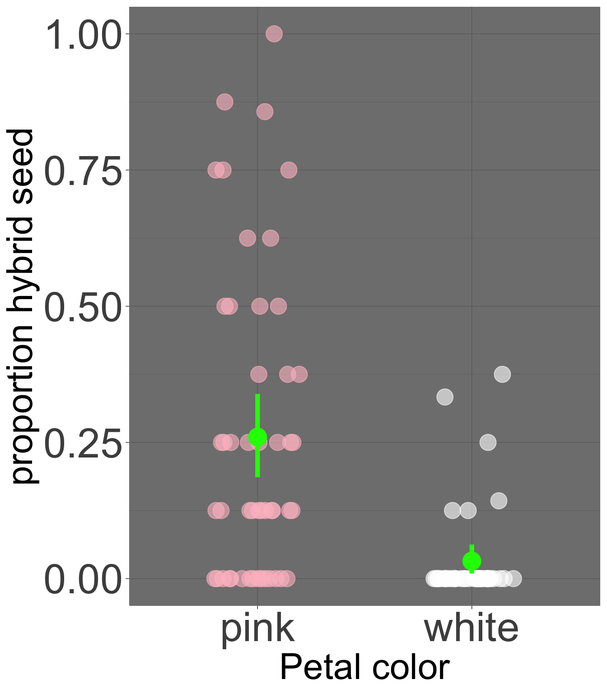
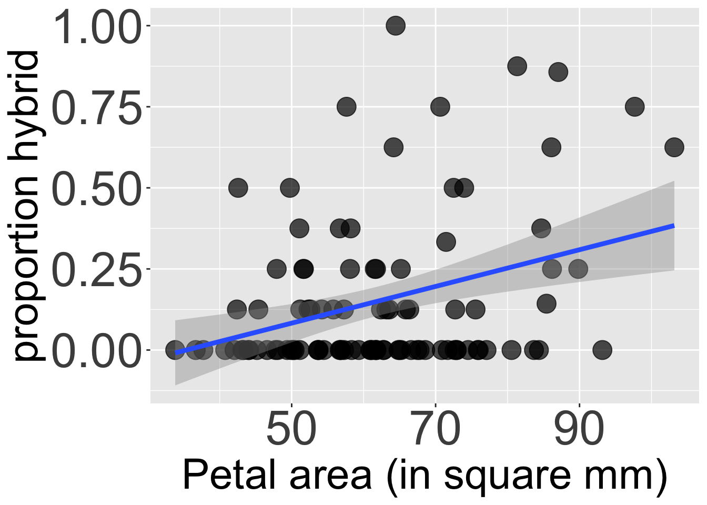

Motivating Scenario: We understand the importance of quantifying uncertainty, and can build a bootstrap distribution. We now want to put a reasonable range on our estimate. Here, we will learn how a confidence interval solves this problem, and what it does and does not mean.”
Learning Goals: By the end of this subsection, you should be able to:
Explain the meaning of a confidence interval
Calculate a bootstrap confidence interval from the bootstrap distribution
Visualize uncertainty by adding confidence intervals to your plots
NOTE: IMO The code introduced in this section is super helpful but need not be memorized. I suggest bookmarking this page so you know where to find these helpful functions, but do not waste time committing them to memory.
We previously generated a bootstrap distribution with slice_sample(). But this required some work on our part. As with much in R there are specialized packages that bootstrap for us. I like these packages because they make it easier to do, harder to mess up, and are often coded more efficiently than we can code.
Here, I show you how to bootstrap with the infer package package. While our first example of bootstrapping a single mean will look similar to our manual approach, you will quickly see how infer’s consistent grammar makes bootstrapping more complex statistics (e.g. a difference in means or a regression slope) surprisingly straightforward.
The code below shows how to conduct the first two steps – it makes a HUGE tibble – with reps (5000 in this example) replicates. I only show a subset of these replicates here, because the table is too large to be hosted by my server.
library(infer)boot_phyb <- gc_rils %>%specify(response = prop_hybrid) |># Specify variable of interestgenerate(reps =5000, type ="bootstrap") # Generate 5000 bootstrap resamples
Next we summarize each bootstrap replicate and calculate summary statistics as before. Reassuringly, the answer is basically the same as we have found previously.
Note: The infer package has handy functions to do these steps too, as I will show you soon. For now I show you how to do it ‘manually’ to remove the mystery of a magic function.
Because bootstrapping involves chance sampling bootstrap estimates of uncertainty will vary slightly each time. We say a bit more about this in the next subsection.
Bootstrapping is not just for means!!
Recall one of our major questions in Clarkia speciation is how floral traits like petal color or petal area impact the propensity to set hybrid seed. We can resample with replacement to estimate uncertainty in all sorts of estimates such as these. Below we’ll see how the infer package makes it easy to do so.
# A tibble: 3 × 2
petal_color prop_hybrid
<chr> <dbl>
1 pink 0.260
2 white 0.0322
3 <NA> 0.112
Nearly 26% of seeds on pink-petaled parviflora RILS at GC are hybrids, while only 3.22% of seeds on white-petaled parviflora RILS at GC are hybrids. So, we estimate a 22.78% difference (or 0.2278) in the proportion of hybrid seeds by petal color morph. However, we know that the estimates going into this are associated with uncertainty. We can even quantify uncertainty in the mean of each group as before (see Figure 1). But how do we estimate our uncertainty in the difference between these means?
To do this, we must:

Figure 1: The proportion of hybrid seed set for pink- and white-petaled flowers at GC. Each point represents an individual plant. Overlaid in bright green is the mean and the 95% bootstrap confidence interval for each petal color morph.
Resample white and pink-petaled flower morphs with replacement.
Calculate the mean hybrid seed set for each morph in this bootstrap replicate.
Find the difference in hybrid seed set by petal-color morph in this bootstrap replicate.
Repeat this a bunch of times to find the bootstrap distribution.
Quantify uncertainty, for example, as the bootstrap standard error and the bootstrap 95% confidence interval.
I could code this myself, but it’s tedious. infer makes it straightforward. The code below uses the formula syntax prop_hybrid ~ petal_color (as we did in our linear model setion) inside specify() to indicate our interest in this relationship. We then tell R to [generate()]((https://infer.netlify.app/reference/generate) the bootstrap distribution and calculate() to find the "diff in means" for each bootstrap replicate:
library(infer)boot_diffs <- gc_rils |>filter(!is.na(petal_color)) |>specify(prop_hybrid ~ petal_color) |># The linear model we're looking intogenerate(reps =5000, type ="bootstrap") |># Bootstrappingcalculate(stat ="diff in means", order =c("pink", "white")) # Summarizing the bootstrap replicate
We can now visualize this bootstrap distribution of differences as a histogram to see the range of plausible values. Figure Figure 2 shows this distribution and its 95% confidence interval.
Code for plotting the bootstrap distribution of hybrid seed set by petal color with 95% CI
Figure 2: The bootstrap distribution of the difference in mean proportion of hybrid seeds between pink and white morphs. The distribution is centered far from zero, and the 95% confidence interval (bounded by the purple dashed lines) does not overlap with the solid black line at zero.
With our bootstrap distribution of differences in hand, we can now precisely quantify our uncertainty. We can find the bootstrap standard error with the sd() function and use infer’s convenient get_ci() function to find the 95% confidence interval.
boot_diffs |>summarise(se =sd(stat))
# A tibble: 1 × 1
se
<dbl>
1 0.0426
boot_diffs |>get_ci(level =0.95, type ="percentile")
Thus, we conclude that a reasonable estimate of the difference in the proportion of hybrid seed lies between 0.147 and 0.314. Importantly, this confidence interval excludes zero so we are pretty sure that pink RILs do set more hybrid seed than white ones.
Slope
We can similarly use infer to find the bootstrap distribution of the slope. For example, we can quantify the uncertainty in our estimate of a 0.00566 increase in proportion hybrid seed with every additional squared mm in petal area (Figure 3) as shown in the code below.
# Estimate the slope# As covariance / variancegc_rils |>filter(!is.na(petal_area_mm)) |>summarise(slope =cov(petal_area_mm, prop_hybrid) /var(petal_area_mm))
# A tibble: 1 × 1
slope
<dbl>
1 0.00566
boot_slopes <- gc_rils |>filter(!is.na(petal_area_mm)) |>specify(prop_hybrid ~ petal_area_mm) |># The linear model we're looking intogenerate(reps =5000, type ="bootstrap") |># Bootstrappingcalculate(stat ="slope") # Summarizing the bootstrap replicatesummarise(boot_slopes , se =sd(stat)) # find SE
# A tibble: 1 × 1
se
<dbl>
1 0.00178
get_ci(boot_slopes,level =0.95, type ="percentile") # 95% CI
Code for plotting the relationship between petal area and proportion hybrid seed.
ggplot( gc_rils, aes(x = petal_area_mm, y = prop_hybrid))+geom_point(size =6,alpha = .7)+geom_smooth(method ="lm",linewidth =1.6)+labs( x="Petal area (in square mm)", y ="proportion hybrid")+theme(legend.position ="none",axis.text =element_text(size =34),axis.title =element_text(size =30))

Figure 3: The relationship between petal area (in mm²) and the proportion of hybrid seed. The blue line is the line of best fit from a linear model, and the gray shaded region represents the 95% confidence interval for this line.
Here we conclude that a reasonable estimate of the increase in proportion hybrid seed for each unit increase in square mm of petal area lies between 0.002 and 0.009. Importantly, this confidence interval excludes zero, so we are pretty sure that the proportion of hybrid see increase with petal area as seen in Figure 3. For me this is super helpful, because without reflection, we could wrongly conclude that a slope of 0.00566 is unimpressive.
… and more!
The infer package can calculate() the many stats including: “mean”, “median”, “sum”, “sd”, “prop”, “count”, “diff in means”, “diff in medians”, “diff in props”, “ratio of props”, “slope”, “odds ratio”, “ratio of means”, and “correlation”! This means we can quantify uncertainty in a bunch of the estimates we have introduced previously.